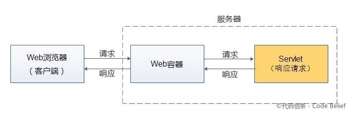
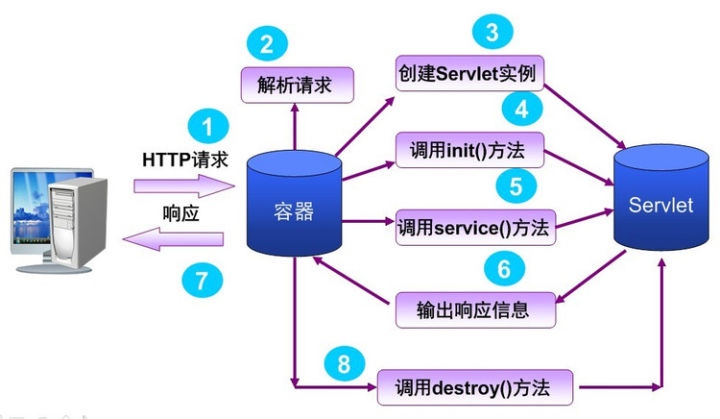
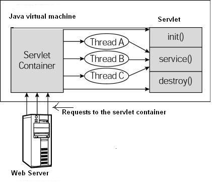
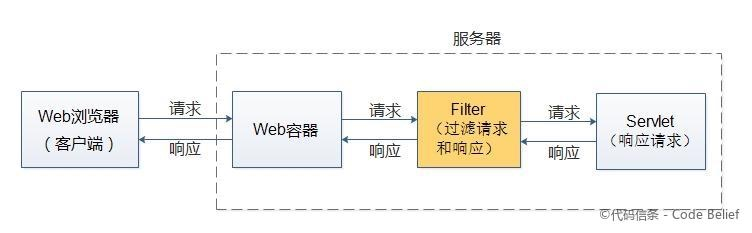
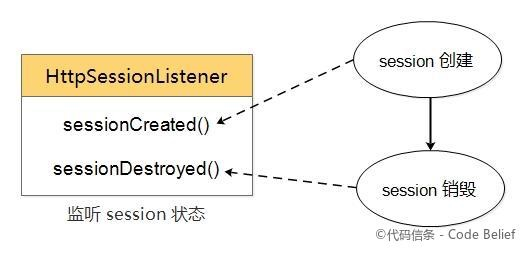
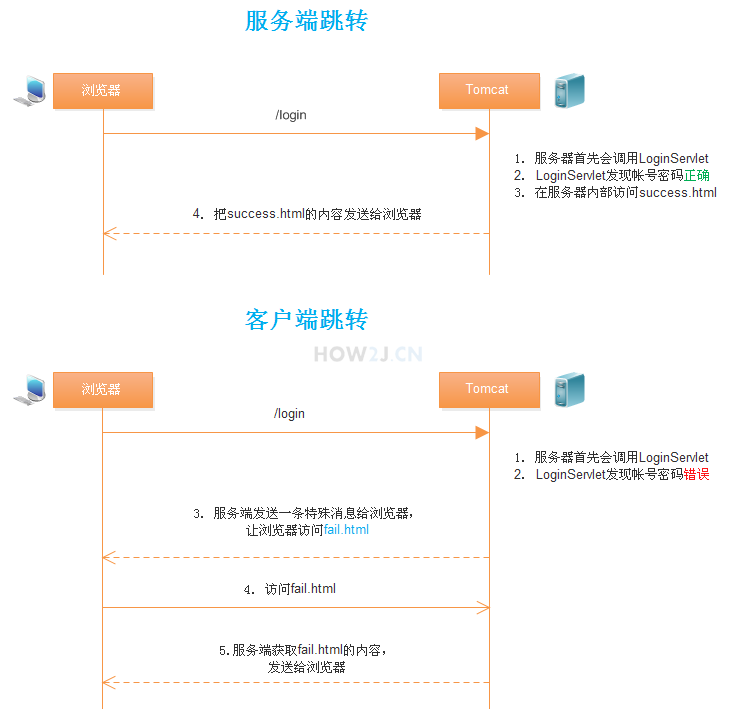

Java - Servlet
定义
Servlet 本质上是一种 Java EE 规范，简单理解就是任意实现了 Servlet 接口的类。这个类定义了如何处理请求和发送响应。
注意，Servlet 不能够单独存在，必须被包含在 Web 容器中，比如 Tomcat， Jetty 等。
即当客户端向服务器发出 HTTP 请求时，首先会由服务器中的 Web 容器（如Tomcat）对请求进行路由，交给该URL对应的 Servlet 进行处理，Servlet 所要做的事情就是返回适当的内容给用户。

Spring MVC 中最重要的组件 DispatcherServlet 就是 Servlet 的实现，所以理解 Servlet 是非常重要的。
z
简单示例
一般用三种方式来定义 Servlet：
- 实现 Servlet 接口
- 继承 GenericServlet 类
- 继承 HttpServlet 类
import java.io.IOException;
import java.util.Date;
import javax.servlet.http.HttpServlet;
import javax.servlet.http.HttpServletRequest;
import javax.servlet.http.HttpServletResponse;
public class HelloServlet extends HttpServlet{
public void doGet(HttpServletRequest request, HttpServletResponse response){
try {
response.getWriter().println("<h1>Hello Servlet!</h1>");
response.getWriter().println(new Date().toLocaleString());
} catch (IOException e) {
// TODO Auto-generated catch block
e.printStackTrace();
}
}
}
在 Web.xml 中完成 url 到 servlet 的映射。
<?xml version="1.0" encoding="UTF-8"?>
<web-app>
<servlet>
<servlet-name>HelloServlet</servlet-name>
<servlet-class>HelloServlet</servlet-class>
</servlet>
<servlet-mapping>
<servlet-name>HelloServlet</servlet-name>
<url-pattern>/hello</url-pattern>
</servlet-mapping>
</web-app>
生命周期

- 加载 Servlet
- 访问路径时，Tomcat 创建路径对应的 Servlet 实例。
- 初始化 ，
Servlet.init()- 即调用 init() 初始化，只会执行一次
- 会在构造方法后执行，只会执行一次
- Servlet 是单例的
- 处理请求，
Servlet.service() - 销毁，
Servlet.destroy() - 卸载
还有两个重要的 Servlet 对象。
ServletConfig即 web.xml 中保存的配置文件。ServletContext即 web 站点共享的数据。
线程安全

我们可以看出容器每次接受到新的请求时会从线程池中拿出一个线程来调用 Servlet 的 Service 方法，这里就会有线程安全的问题。
所以如果存在共享资源，必须要加上同步操作。
执行流程
Filter
Filter 是介于 Web 容器和 Servlet 之间的过滤器，用于过滤未到达 Servlet 的请求或者由 Servlet 生成但还未返回响应。
需要实现 javax.servlet.Filter 接口。

Listener
Listener 是用于监听某些特定动作的监听器。当特定动作发生时，监听该动作的监听器就会自动调用对应的方法。
以 HttpSessionListener 为例：

相关接口可以分为三类：
- ServletContext
ServletContextListener：ServletContext 的启动和销毁。ServletContextAttributeListener：application 范围的属性变化。
- HttpSession
HttpSessionListener：session 的创建和销毁。HttpSessionIdListener： session 的 id 是否被更改。HttpSessionAttributeListener：session 范围的属性变化。HttpSessionActivationListener：监听绑定在 HttpSession 对象中的 JavaBean 状态。HttpSessionBindingListener：对象与 session 的绑定和解绑。
- ServletRequest
ServletRequestListener： ServletRequest 对象的初始化和销毁。ServletRequestAttributeListener： ServletRequest 对象的属性变化。
http 协议相关
请求
重写方法实现不同的请求方法的映射。
public class LoginServlet extends HttpServlet {
protected void doPost(HttpServletRequest request, HttpServletResponse response)
}
protected void doGet(HttpServletRequest request, HttpServletResponse response)
}
}
这里的 doPost 和 doGet 实际上都是由 service 方法调用的。
所以直接重写 service 方法也可以。
HttpServletRequest对象常用方法：request.getRequestURL(): 浏览器发出请求时的完整URLrequest.getRequestURI(): 浏览器发出请求的资源名部分，去掉了协议和主机名"request.getQueryString(): 请求行中的参数部分，只能显示以get方式发出的参数，post方式的看不到request.getRemoteAddr(): 浏览器所处于的客户机的IP地址request.getRemoteHost(): 浏览器所处于的客户机的主机名request.getRemotePort(): 浏览器所处于的客户机使用的网络端口request.getLocalAddr(): 服务器的IP地址request.getLocalName(): 服务器的主机名request.getMethod(): 得到客户机请求方式一般是GET或者POST
- 获取参数：
request.getParameter(): 是常见的方法，用于获取单值的参数request.getParameterValues(): 用于获取具有多值的参数request.getParameterMap(): 用于遍历所有的参数，并返回Map类型。request.getAttribute()， 一般用于获取request域对象的数据(在跳转之前把数据使用setAttribute来放到request对象上)
- 请求头信息：
request.getHeader()获取浏览器传递过来的头信息。 比如getHeader("user-agent")request.getHeaderNames()获取浏览器所有的头信息名称
- 服务端传参
setAttribute()getAttribute()
响应
常用：
response.getWriter().println()直接写入响应内容response.setContentType("text/html; charset=UTF-8");response.setCharacterEncoding("UTF-8");response.sendRedirect("fail.html");response.setStatus(301);response.setHeader("Location", "fail.html");
会话
cookie
Cookie类用于创建一个Cookie对象
response接口中定义了一个addCookie方法，它用于在其响应头中增加一个相应的Set-Cookie头字段
request接口中定义了一个getCookies方法，它用于获取客户端提交的Cookie
Cookie cookie = new Cookie("username", "nemos");
cookie.setMaxAge(0);
cookie.setDomain(".nemos.com");
response.addCookie(cookie);
session
//获取到从Servlet4的Session存进去的值
HttpSession httpSession = request.getSession();
httpSession.setAttribute("name", "nemos");
String value = (String) httpSession.getAttribute("name");
常用API：
long getCreationTime();【获取Session被创建时间】String getId();【获取Session的id】long getLastAccessedTime();【返回Session最后活跃的时间】ServletContext getServletContext();【获取ServletContext对象】void setMaxInactiveInterval(int var1);【设置Session超时时间】int getMaxInactiveInterval();【获取Session超时时间】Object getAttribute(String var1);【获取Session属性】Enumeration<String> getAttributeNames();【获取Session所有的属性名】void setAttribute(String var1, Object var2);【设置Session属性】void removeAttribute(String var1);【移除Session属性】void invalidate();【销毁该Session】boolean isNew();【该Session是否为新的】
一般来说 cookies 是 session 的实现，但是 session 不一定依靠 cookies 来实现。
跳转
转发(forward) 服务端跳转
import java.io.IOException;
import javax.servlet.ServletException;
import javax.servlet.http.HttpServlet;
import javax.servlet.http.HttpServletRequest;
import javax.servlet.http.HttpServletResponse;
public class LoginServlet extends HttpServlet {
private static final long serialVersionUID = 1L;
protected void service(HttpServletRequest request, HttpServletResponse response)
throws ServletException, IOException {
String name = request.getParameter("name");
String password = request.getParameter("password");
if ("admin".equals(name) && "123".equals(password)) {
request.getRequestDispatcher("success.html").forward(request, response);
}
}
}
重定向(redirect) 客户端跳转
import java.io.IOException;
import javax.servlet.ServletException;
import javax.servlet.http.HttpServlet;
import javax.servlet.http.HttpServletRequest;
import javax.servlet.http.HttpServletResponse;
public class LoginServlet extends HttpServlet {
private static final long serialVersionUID = 1L;
protected void service(HttpServletRequest request, HttpServletResponse response)
throws ServletException, IOException {
String name = request.getParameter("name");
String password = request.getParameter("password");
if ("admin".equals(name) && "123".equals(password)) {
request.getRequestDispatcher("success.html").forward(request, response);
}
else{
response.sendRedirect("fail.html");
}
}
}

区别：
- 发生地方不同
- 一个在服务器，地址不会变
- 一个在客户端，地址会变
- 用法不同
request.getRequestDispatcher("xxx.").forward(request,response)response.sendRedirect("xxx.html")
- 参数
- 转发是带着转发前的请求的参数的
- 重定向是新的请求
- 使用场景
- 转发用于处理业务逻辑
- 重新定向用于登录等表单提交